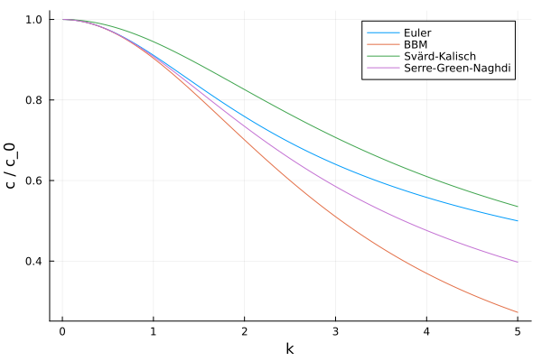
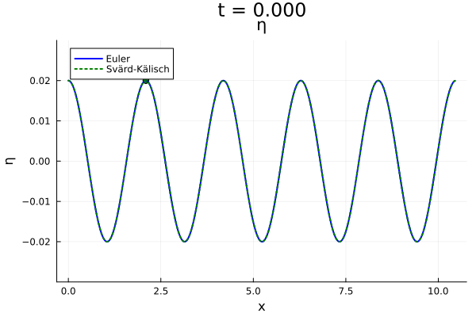

Dispersive properties of the equations
The equations implemented in DispersiveShallowWater.jl describe the propagation of waves in a shallow water system. The equations are dispersive, meaning that the phase speed of the waves depends on their wavelength. This is in contrast to non-dispersive waves, where all waves travel at the same speed, such as the solution to the shallow water equations linearized around a state with vanishing velocity and constant water height $h_0$. In this case the phase speed is constantly given by $c_0 = \sqrt{g h_0}$, where $g$ is the acceleration due to gravity and $h_0$ is a reference water height.
The linear dispersion relation of a wave equation describes the relationship between the angular frequency $\omega$ and the wavenumber $k$ of a wave. The angular frequency is related to the period $T$ of the wave by $\omega = 2\pi / T$ and the wavenumber is related to the wavelength $\lambda$ by $k = 2\pi / \lambda$. The simple case of just one wave traveling with speed $c$ is a harmonic (or plane wave) solution of the form $\eta(t, x) = \mathrm{e}^{\mathrm{i}(k x - \omega t)}$ with $c = \omega / k$. The linear dispersion relation of a wave equation is then derived by substituting this solution into a linearized version of the equation and solving for $\omega$ in terms of $k$.
Since all the equations implemented in DispersiveShallowWater.jl are approximations to the full wave equations given by the Euler equations, their dispersion relations do not describe the exact speed of waves, but only an approximation to it, where the approximation usually becomes better for longer wavelengths. The dispersion relation of the full wave system is given by
\[\omega(k) = \pm \sqrt{g k \tanh(h_0 k)}.\]
In DispersiveShallowWater.jl, we can investigate the dispersion relations of the different equations. Let us plot the wave speeds of the different equations normalized by the shallow water wave speed $c_0$ as a function of the wave number. We pick a reference water height of $h_0 = 0.8$ and gravitational acceleration of $g = 9.81$.
using DispersiveShallowWater
using Plots
eta0 = 0.0
reference_height() = 0.8
h0 = reference_height()
g = 9.81
disp_rel = LinearDispersionRelation(h0)
k = 0.01:0.01:5.0
euler = EulerEquations1D(; gravity = g, eta0 = eta0)
c_euler = wave_speed.(disp_rel, euler, k; normalize = true)
plot(k, c_euler, label = "Euler", xlabel = "k", ylabel = "c / c_0", legend = :topright)
bbm = BBMEquation1D(; gravity = g, eta0 = eta0, D = h0)
c_bbm = wave_speed.(disp_rel, bbm, k; normalize = true)
plot!(k, c_bbm, label = "BBM")
sk = SvaerdKalischEquations1D(; gravity = g, eta0 = eta0)
c_sk = wave_speed.(disp_rel, sk, k; normalize = true)
plot!(k, c_sk, label = "Svärd-Kalisch")
sgn = SerreGreenNaghdiEquations1D(; gravity = g, eta0 = eta0)
c_sgn = wave_speed.(disp_rel, sgn, k; normalize = true)
plot!(k, c_sgn, label = "Serre-Green-Naghdi")
To verify that the wave speed predicted by the dispersion relation is indeed the observed one, let us simulate a simple wave traveling in a domain with periodic boundary conditions. We initialize the wave as a traveling wave for the Euler equations by using the dispersion relation. As an example we solve the problem with the Svärd-Kalisch equations.
using OrdinaryDiffEqTsit5
using Printf
equations = sk
wave_number() = 3.0
frequency(k) = disp_rel(euler, k)
function initial_condition_traveling_wave(x, t, equations, mesh)
k = wave_number()
omega = frequency(k)
h0 = reference_height()
A = 0.02
h = A * cos(k * x - omega * t)
v = sqrt(equations.gravity / k * tanh(k * h0)) * h / h0
eta = h + equations.eta0
D = h0
return SVector(eta, v, D)
end
k = wave_number()
coordinates_min = 0
coordinates_max = 10 * pi / k # five waves (wave length = 2pi/k)
N = 512
mesh = Mesh1D(coordinates_min, coordinates_max, N)
# create solver with periodic SBP operators of accuracy order 4
accuracy_order = 4
solver = Solver(mesh, accuracy_order)
# semidiscretization holds all the necessary data structures for the spatial discretization
semi = Semidiscretization(mesh, equations, initial_condition_traveling_wave, solver,
boundary_conditions = boundary_condition_periodic)
tspan = (0.0, 3.0)
ode = semidiscretize(semi, tspan)
saveat = range(tspan..., length = 201)
sol = solve(ode, Tsit5(), abstol = 1e-7, reltol = 1e-7,
save_everystep = false, saveat = saveat, tstops = saveat)
x = 0.2 * (coordinates_max - coordinates_min)
c_euler = wave_speed(disp_rel, euler, k)
c = wave_speed(disp_rel, equations, k)
anim = @animate for step in eachindex(sol.u)
t = sol.t[step]
x_t_euler = x + c_euler * t
x_t = x + c * t
index = argmin(abs.(DispersiveShallowWater.grid(semi) .- x_t))
scatter([x_t_euler], [initial_condition_traveling_wave(x_t_euler, t, euler, mesh)],
color = :blue, label = nothing)
eta, = sol.u[step].x
scatter!([x_t], [eta[index]],
color = :green, label = nothing)
plot!(semi => sol, plot_initial = true, plot_bathymetry = false,
conversion = waterheight_total, step = step, legend = :topleft, linewidth = 2,
plot_title = @sprintf("t = %.3f", t), yrange = (eta0 - 0.03, eta0 + 0.03),
linestyles = [:solid :dot], labels = ["Euler" "Svärd-Kälisch"],
color = [:blue :green])
end
gif(anim, "traveling_waves.gif", fps = 25)[ Info: Saved animation to /home/runner/work/DispersiveShallowWater.jl/DispersiveShallowWater.jl/docs/build/traveling_waves.gif
The dots in the movie show that the wave speed predicted by the dispersion relation is indeed the same as the one obtained by numerically solving the equations. As expected from the plot above the wave speed of the Svärd-Kalisch equations is a bit faster than the correct one, which is due to the approximation made in the equations.